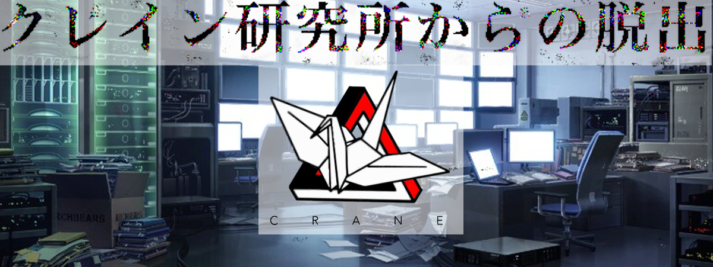

相談
やべぇって！！ もう足音が聞こえてきてるんだよ！！
急がねぇとガチで捕まっちまう！！！ 俺も手伝ってやるから早く助けてくれ！！
STAGE：3
相棒が気がついたことがあるようだ
文章の所々に数字があるな、もしかするとこの数字は文字に置き換えられるんじゃないのか？
それと、どの問にも93があるな。93が分かれば他の数字もわかるようになると思うんだが……
相棒がさらに気がついたようだ
なあ相棒、1問目のクレ42ってこの研究所の名前のクレインと似てないか？
とりあえずクレ42をクレインだと仮定して考えていこうぜ。
だとすると、「イ」が4、「ン」が2ってことになるな。
1問目の4の部分を「イ」に置き換えると
93をえイごにす3と？ 93を英語にす3と？になる……！！
クレインは鶴を英語にしたものだから9に「ツ」3に「ル」を置き換えれば……
Q.鶴を英語にすると？ A.クレイン
間違ってたらまた考え直せばいいんだ、とりあえず今はこんな感じで解いていこうぜ！！
答え
えええ